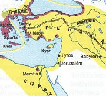
Perská říše v době největšího rozmachu
|
PERSIE (ÍRÁN)
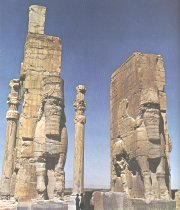
Peršany známe hlavně díky řecko-perským válkám. Při zběžném pohledu na mapu starověké Persie musíme ocenit statečnost Řeků, kteří spojili své síly a postavili se obrovské přesile, jíž neodolala Mezopotámie ani Egypt. Méně už toho víme o samotných Íráncích. Jejich kultura byla značně ovlivněna mezopotamskou. Svědčí o tom nejen podoby perských soch, ale také klínové písmo, které si upravili pro svou potřebu. Íránská mytologie má zase velmi blízko k indické. Přes tyto shody vytvořili Peršané řadu originálních uměleckých děl a jejich náboženství i kultura rozhodně stojí za pozornost.
|
Historie
Na území dnešního Íránu se zrodilo několik starověkých civilizací. Ve 3. tis. př.n.l. to byl Elam a v 8. až 6. st. př.n.l. médská říše. Íránské kmeny osídlily tuto oblast ve 2. tis. př.n.l. Největšího rozmachu dosáhla perská říše (550-331 př.n.l.), která si podmanila Mezopotámii i Egypt. Její panovníci Dareios I. a Xerxes chtěli získat i řecké státy, ale to se jim nepodařilo. Peršané naopak podlehli Alexandrovi Makedonskému (331 př.n.l.). Významným státním útvarem byla sásánovská říše (226-651 n.l.), kterou dobyli Arabové. V roce 1935 byl název státu změněn z Persie na Írán (Země Árjů).
|
Zoroastrismus (mazdaismus)
Íránské náboženství nazýváme zoroastrismus (podle řeckého pojmenování proroka Zarathuštry, který žil zřejmě v 7. stol. př.n.l.) nebo mazdaismus (podle boha Ahura Mazdy). Ahura Mazda (Moudrost) ztělesňuje princip dobra, který se utkává se svým opakem – principem zla Ahrimanem (Špatné smýšlení).
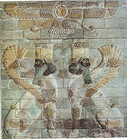
Okřídlený sluneční kotouč (symbol boha Ahury Mazdy) se vznáší nad lvy s lidskou hlavou a křídly.
|
Avesta (1. tis. př.n.l.)
Základním náboženským textem starověkých Íránců byla Avesta (Chvála). Tvoří ji Jasna (modlitby k bohům), gáthy (zpívané hymny připisované Zarathuštrovy) a jašty (básnické chvalozpěvy na různá božstva). Další částí je Vidévdát (zákon proti démonům) – jde o náboženský zákoník, který se zaměřuje na vztahy mezi lidmi a zachycuje rituální předpisy. Pro celou Avestu je typické časté opakování úvodních formulí. Z celého díla se bohužel dochovala nanejvýš jedna čtvrtina.
Íránci vyznávali i další božstva. Nejznámějším byl Mithra (bůh smluv a morálních závazků), který byl velmi oblíbený také ve starověkém Římě.
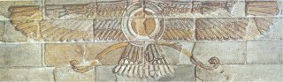
|
Friedrich Nietzsche
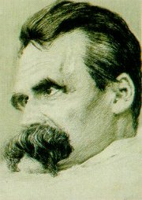
Postavu perského proroka využil německý filozof Friedrich Nietzsche (1844-1900) ve své knize Tak pravil Zarathuštra. Jeho myšlenky a výroky ale nemají s původním mazdaismem nic společného.
Co uctívali staří Íránci?
Co uctívají příslušníci jiných náboženství?
Uctívají něco nebo někoho Češi?
Co uctíváš ty? Proč?
|
Omar Chajjám (1048-1131)
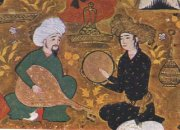
Básník, filozof a vědec Omar Chajjám psal v době, kdy byl hlavním náboženstvím v Persii islám. Přestože se k němu sám hlásil, byl „pravověrnými“ muslimy často kritizován za své názory.
|
Omar Chajjám: Čtyřverší
Kromě řady astronomických a filozofických spisů napsal Omar Chajjám několik set čtyřverší. Prolínají se jimi hlavně motivy života a smrti.
|
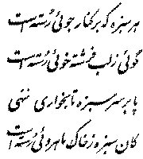
Chajjámovo čtyřverší
Co chtěl Omar Chajjám vyjádřit ve svých básních?
Jak jim rozumíš ty?
|
Háfiz (1320-1390)
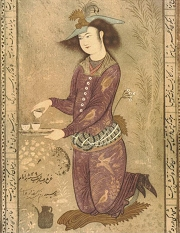
Peršanka
|
Háfiz: Díván
Háfiz (Háfez) je autorem básnické sbírky Díván, která obsahuje na 500 gazelů. Básně ve sbírce jsou seřazeny abecedně (podle posledního písmene úvodního verše).
|
Gazel
Gazel je orientální básnická forma. Vyznačuje se rýmovým schématem aa ba ca... Rým tvoří většinou stejné slovo nebo skupina slov.
Pokus se napsat gazel.
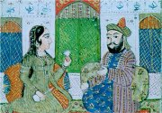
|
Jazyk a písmo
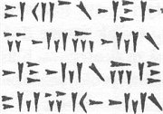
Perské klínové písmo bylo narozdíl od mezopotamského hláskové.
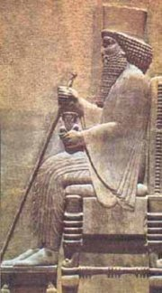
Král Dareios I. Veliký (522-486 př.n.l.) rozšířil perskou říši o území Egypta, Mezopotámie, oblast Malé Asie a část Indie. Jeho postup zastavili až Řekové v bitvě u Marathónu (490 př.n.l.).
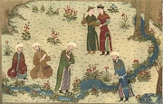
Výjev z Firdausího Knihy králů
|
Jazyk a písmo
Avesta byla složena v avestském jazyce v době proroka Zarathuštry. Zapsána ale byla až ve 4. stol. n.l. za vlády Sásánovců. Pro účely písemného zachycení tohoto po staletí ústně tradovaného díla bylo vytvořeno nové hláskové písmo. Dalšími perskými jazyky jsou parthština a pehleví. Stará perština i další jazyky, kterými se mluvilo na území dnešního Íránu, patří do indoevropské jazykové rodiny.
Dáreiův nápis v Behistúnu
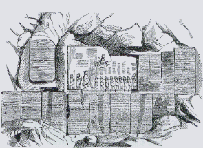
Základy k rozluštění klínopisu položil německý vědec Georg Fridrich Grotefend (1775-1853) v roce 1802. Byl to úkol skoro nadlidský, protože neměl k dispozici žádný dvoujazyčný text! Grotefend správně usoudil, že nápis, který má v ruce, je seznamem perských panovníků, a podařilo se mu odvodit významy opakujících se znaků. Na jeho práci navázali další vědci, především Angličan Henry Rawlinson [ról-] (1810-1895), který nejprve rozluštil perský a v roce 1851 také akkadský nápis na skále v Behistúnu (kromě zmíněných jazyků zde byl text nápisu také v elamštině).
Další díla
Zendavesta (překlad Avesty do staré perštiny)
Dénkárt (Zarathuštrův životopis)
Bundahišn (Prvotní stvoření)
Mání a manichejská literatura
Firdausí: Šáhnáme (Kniha králů)
Nizámí: Pětice eposů
Památník Záreovcův (hrdinský epos)
Rúmí (Maulaví): Dvojverší vnitřního smyslu
Sa’dí: Růžová zahrada, Ovocný sad
Džámí: Jarní zahrada
|
Anquetil Duperron
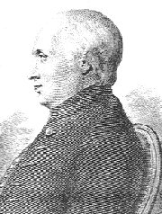
Nejstarší dochované rukopisy pocházejí až ze 14. stol. n.l. V Indii je objevil zaměstnanec pařížské Královské knihovny Anquetil Duperron (1731-1805). Ten přivezl roku 1762 do Francie 180 rukopisů, které začal okamžitě překládat. Byl ale obviněn z padělatelství, protože nikdo nevěřil, že by podobně vyspělá civilizace mohla existovat. Pravost jeho překladů byla potvrzena až v roce 1823.
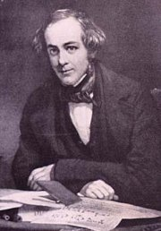
Henry Rawlinson rozluštil perský a akkadský nápis na skále v Behistúnu.
|
Internetové stránky
Iranian languages
Avesta
Behistun
Persie, informace
Háfiz, informace
Písně Háfízovy
Čtyřverší Omara Chajjáma
Omar Chajjám, informace
Rúmí, informace
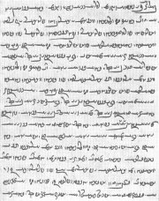
Stránka z Avesty
|
Doporučená četba
Curtisová, V.S.: Perské mýty, přel. S.Kovářová, NLN, Praha 1998
Firdausí: Kniha králů (Šáhnáme), přel. J.Borecký, Praha 1910
Firdausí: Zál a Rúdábe, přel. V.Kubíčková
Guargání, Fachruddín: O lásce Vísy a Ramína, přel. V.Kubíčková, Odeon, Praha 1979
Háfez: Z Dívánu, přel. V.Kubíčková, Supraphon, Praha 1986
Hledání pravdy a krásy, antologie perské literatury, přel. J.Bečka, DharmaGaia, Praha 2003
Chajjám, Omar: Robáijját, přel. E.Štolbová, Dar Ibn Rushd, Praha 2001
Kajká’ús: Kniha rad, přel. J.Osvald, Odeon, Praha 1977
Katalog perských rukopisů z Národní knihovny České republiky, Dar Ibn Rushd, Praha 2001
Klíma, O.: Oběti ohňům, výběr z památek staroíránské a středoíránské literatury, Odeon, Praha 1985
Klíma, O.: Sláva a pád starého Íránu, Praha 1977
Klíma, O.: Zarathuštra, Orbis, Praha 1964
Nizámí: Příběh panice a jiné básně, přel. V.Nezval
Nizámí: Sedm princezen, přel. J.Rypka
Rypka a kol.: Dějiny perské a tádžické literatury, Nakladatelství ČSAV, Praha 1956
Rúmí: Masnaví, přel. J.Bečka, Protis, Praha 1995
|
Připrav si referát o některé z uvedených knih nebo internetových stránek.
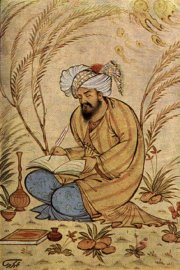
Píšící básník
|
|